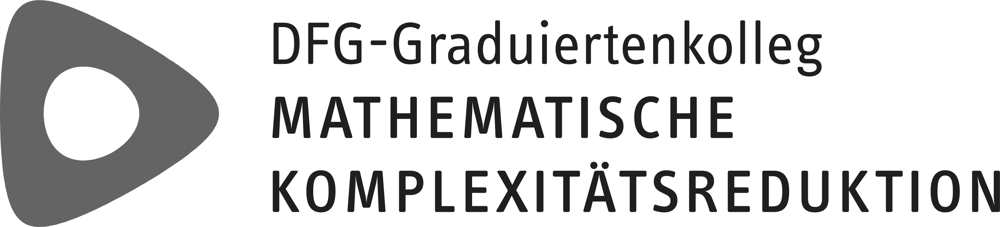
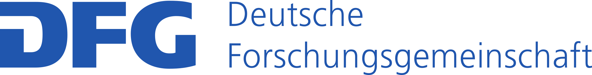
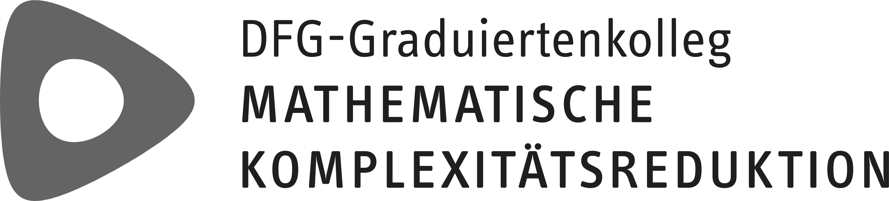
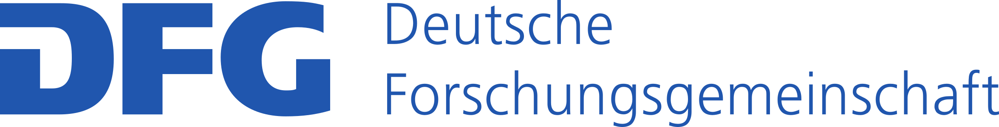

About
Model Order Reduction
The numerical simulation of mathematical models described by partial differential equations (PDEs) or large systems of ordinary differential equations (ODEs) is nowadays an important tool for research in almost every scientific discipline. Yet, the use of such models is often limited by the available computational resources.
Over the last decade, a variety of algorithms have been developed which compute, for a given numerical ODE/PDE model, a mathematically certified surrogate that can be simulated in a small fraction of the time required for the solution of the original model. These techniques, known as model order reduction (MOR), are now becoming an integral part in many simulation workflows which otherwise would be infeasible, even on the largest available supercomputers.
See the MOR Wiki for more information.
pyMOR
pyMOR is a free software library for building model order reduction applications with the Python programming language. Implemented algorithms include reduced basis methods as well as system-theoretic methods. Some of the available methods are:
- Greedy basis generation,
- Proper Orthogonal Decomposition (POD),
- Discrete Empirical Interpolation Method (DEIM),
- POD-Greedy,
- Balanced Truncation,
- Iterative Rational Krylov Algorithm (IRKA),
- models based on artificial neural networks,
- Dynamic Mode Decomposition (DMD).
All algorithms in pyMOR are formulated in terms of abstract interfaces for seamless integration with external PDE solver packages. Currently, there is support for deal.II, DUNE, FEniCS, and NGSolve. Custom (domain specific) solvers can be easily integrated with pyMOR. Moreover, pure Python implementations of FEM (Finite Element Method) and FVM (Finite Volume Method) discretizations using the NumPy/SciPy scientific computing stack are provided for getting started quickly.
pyMOR School
The pyMOR School is the fourth event for current and future pyMOR users and developers. It will take place at the Max Planck Institute for Dynamics of Complex Technical Systems from Monday noon (August 22nd) to Friday noon (August 26th).
The School will consist of introductory lectures on the MOR methods available in pyMOR combined with interactive pyMOR tutorial and exercise sessions. Further, participants are encouraged to bring their own projects to work on during the school with the support of the pyMOR developers.
Organizers
The pyMOR School 2022 is organized by:
- Linus Balicki (Virginia Tech)
- René Fritze (WWU Münster)
- Hendrik Kleikamp (WWU Münster)
- Petar Mlinarić (Virginia Tech)
- Stephan Rave (WWU Münster)
- Jens Saak (MPI Magdeburg)

 
